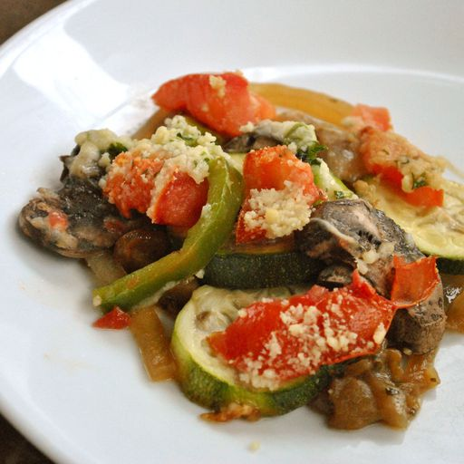

Home
Ratatouille Recipe

Description
This ratatouille recipe is my version of the terrific French vegetable stew made with fresh tomatoes and lots of
summer vegetables. It's very versatile side dish and makes a delicious vegetarian main dish, too.
Ingredients
- Garlic and oil: This flavorful ratatouille recipe starts with fresh garlic cooked in olive oil.
- Produce: You’ll need an eggplant, two zucchini, two tomatoes, fresh mushrooms, an onion, and a red or green
bell pepper.
- Seasonings: Season the ratatouille with dried parsley and salt.
- Parmesan: A cup of grated Parmesan cheese takes the ratatouille’s flavor up a notch.
Steps
- In a skillet, cook the garlic in olive oil. Add the eggplant, parsley, and salt.
- Cook until the eggplant is tender, then spread the mixture in a prepared casserole dish and sprinkle with
Parmesan.
- Spread the zucchini on top and sprinkle with more cheese. Continue layering according to the instructions in
Step 3.
- Bake the ratatouille in the preheated oven until the vegetables are tender.